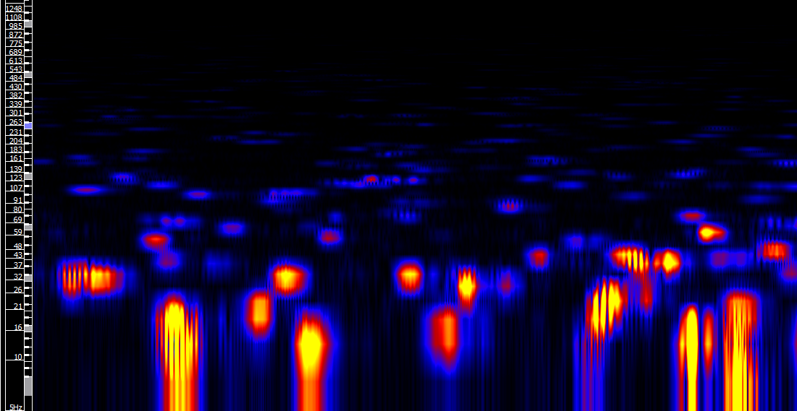

Executive Summary
When Sony and Universal first sued the AI music service Suno for copyright infringement, they identified 560 songs. Then the plaintiffs' expert pried open Suno's training data with audio-fingerprint matching, and the number of works they moved to add to the complaint swelled to more than 60,000. This piece reads that lawsuit — one that began interrogating the training set one song at a time — as a question of data lineage.
While the song count was being fought over, the court's center of gravity quietly shifted. Since Bartz v. Anthropic in 2025, U.S. courts have begun to weigh "does the output erode the original's market?" more heavily than "what did it learn from?" as the fourth fair-use factor. Learning from lawfully acquired data tends to be treated leniently; output that competes directly with the original is treated strictly. But this standard is still unsettled law, emphasized differently from judge to judge.
For anyone who works with data, the signal this case leaves is clear. Because Suno never recorded per-song provenance itself, a third party had to force that provenance back into existence through legal process, after the fact. The moment each individual work's origin becomes courtroom evidence, data lineage stops being an ethics slogan and becomes legal infrastructure.
Key Figures
Source: Axis Intelligence AI Copyright Lawsuits Tracker
Three numbers compress the weight and direction of this case. One shows how much per-song matching grew the complaint; one shows why that song count is fought over so fiercely; and one is the unit rate of a settlement already underway on the other side of the dispute.
560 → 61,026 songs
Works named in the complaint
Works the plaintiffs moved to add after audio-fingerprint matching — and even this, they said, is only a portion of the actual matches
$150,000
Statutory damages cap per work
The ceiling for willful infringement under U.S. copyright law — at 60,000 songs, exposure jumps into the trillions in theory
$0.002–0.005
Royalty per Udio generation
The unit rate in Universal's licensing deal with Udio — a settlement that presupposes per-song tracking to even exist
How 560 Songs Grew to 60,000
The original complaint, led by the Recording Industry Association of America (RIAA) and filed in June 2024, named roughly 560 works that Suno had allegedly trained on without authorization. The real weight of the suit was added later. For about two weeks starting in November 2025, an expert retained by Universal and Sony physically entered a secured room at Suno's law firm and matched Suno's entire training dataset against an audio-fingerprint system.
Audio fingerprinting converts a track's pitch distribution, harmony, and rhythmic patterns into numbers to determine whether two recordings are the same song. The matching work continued into early 2026, and as a result the plaintiffs moved in May 2026 to add 61,026 works to the complaint. The plaintiffs themselves stated that even this number is only a portion of the actual matches. Around the same time, Sony filed a separate motion to add works against Suno's rival service Udio.

Nor did this matching proceed smoothly. Suno agreed to the first-stage fingerprint comparison, then withdrew consent over the deeper analysis method, and work resumed only after a magistrate judge intervened and a renegotiation was reached. Reconstructing provenance where none was recorded turned out to be a costly process that had to pass through legal step after legal step. As we'll see later, this scene is the heart of what the case teaches data practitioners.
The reason the song count is fought over so fiercely lies in the damages structure. U.S. copyright law provides for statutory damages of up to $150,000 per work for willful infringement. Whether 560 works are named or 60,000, the theoretical damages ceiling shifts by entire orders of magnitude. In its answer, Suno said that building the service required exposing tens of millions of recordings to the program, and that the plaintiffs' works were presumably among them — effectively conceding the scale of its training.
Case status: As of July 2026, what is being contested is the procedural question of a "motion to add works," not a ruling on the merits. The close of fact discovery and the deadline for formal summary-judgment motions are set for late 2026 into 2027, so a final call on fair use is still some way off.
The Court Isn't Asking What It Learned From
To understand why song matching became the key to winning or losing the Suno case, you have to first look at the June 2025 Bartz v. Anthropic decision from the Northern District of California. In that case, brought by authors against Anthropic's training on books, Judge Alsup drew a line on the fourth of those factors in particular, market effect.
The ruling split along how the data was acquired. Training on lawfully purchased books, the court found, made the fourth factor favor fair use. The judge compared the authors' grievance to a complaint that "teaching writing so well produces a flood of competing works," and dismissed the claim that training itself causes competitive harm. He also rejected the authors' argument that a market for training licenses had been invaded, reasoning that copyright law does not grant authors the right to monopolize that market. Conversely, copies obtained through piracy made the fourth factor unfavorable. The reasoning was that even if the book is later bought legitimately, the infringement that already occurred cannot be undone.
The crux is that the center of gravity of the analysis moved. In a framework where infringement was decided by the single question "was the work used for training?", the question "how does that training touch the original's market?" rose to become the deciding one. The logic the RIAA and Sony aim at Suno uses exactly this frame: because Suno generates music that competes directly with the original songs, it fails the fourth factor.
The Line Between Learning and Competing Still Wobbles
As of 2026, the trend commentators describe boils down to two strands. Transformative training that does not substitute for the original — like learning from medical literature to assist diagnosis — is treated favorably for fair use, while output that replaces news articles or produces music competing directly with the original songs leans toward infringement. The line dividing analytical training from competing output is, in effect, where the case is really won or lost.
The problem is that this line is not yet firm. Around the same time, in Kadrey v. Meta, Judge Chhabria noted that whether output competing with the original dilutes its market would usually decide the fourth factor — yet ruled for Meta in the end because the plaintiffs failed to produce that evidence. Judge Alsup declined to recognize licensing-market harm; Judge Chhabria left room to recognize it. This fault line, where each judge emphasizes something different, is precisely why the Suno case's eventual ruling is being watched as a precedent that the AI copyright suits now in progress will each cite.
The point: The question "is training unlawful?" keeps receding, and the question "does the output erode the original's market?" keeps coming forward. But to prove that erosion, you have to be able to trace, song by song, which works went into training and what output they led to.
Why Warner and Universal Chose Licensing
Not every label chose to fight in court. Warner Music signed a licensing deal with Suno in November 2025 and stepped away from the litigation. In October 2025, Universal agreed with Udio to a royalty of roughly $0.002 to $0.005 per generation and committed to launching a licensed AI music platform together. The direction of the major labels is tilting from blocking toward building settlement infrastructure.
There is a reason this shift matters from a data perspective. To split a royalty to the rightsholder of a specific work on every generation, you have to be able to track — song by song — which tracks were involved in training and generation. Without lineage, not only is it hard to contest infringement in court; even if you avoid litigation and move to settlement, the settlement itself cannot stand. Whether the path is blocking or settlement, both rest on a foundation of per-song provenance records.
Skip the Records and Someone Rebuilds Them for You
The decisive evidence in the Suno case turned out to be the forensic audio-fingerprint matching the court compelled. Because Suno never recorded per-song provenance itself, the plaintiffs' expert had to enter an office, match the training data one item at a time, and reconstruct that provenance after the fact. This is the scene where the absence of data lineage converts, past reputational risk, into discovery cost and litigation risk.
The Pebblous blog has covered a similar structure before: the case where The Atlantic reconstructed and published a training dataset on the scale of 21.2 million songs. The difference is that that was journalism exposing it after the fact, whereas here the litigation process itself compelled the reconstruction. The same pattern is not confined to music. In Getty v. Stability AI, watermark residue left in images became evidence of direct copying; in The New York Times v. OpenAI, the issue is whether the output competes with the original. In every one of these cases, the axis of the dispute gathers not around whether training is unlawful, but around whether provenance can be proven.
What the U.S. is pushing through litigation, Europe pushes through regulation. The EU AI Act requires documentation of the source and scope of training data for high-risk AI, and obliges providers of general-purpose AI models to publish a summary of training data. Litigation or regulation, the destination is the same sentence: keep what you learned from in a form you can prove.

Are You Recording Provenance You Could Prove Today?
For data practitioners, this case narrows to one question. Are you recording the provenance of the songs, documents, and images that went into your training corpus in a form you could prove today? If you lack a lineage-tracking system that records each item's origin, license, and rights information as the training data is assembled, you end up unable either to prove or to rebut what data you used, why, and how. Setting aside who wins the copyright suit, a model in that state is an asset you cannot audit.
There's no need to see lineage records only as copyright-risk defense. Being able to trace what data went in is what lets you explain why a model answers the way it does and single out the data that caused a problem. Provenance markers are not regulatory paperwork; they are part of data quality. The Suno case is showing, as a live example, exactly why the practical principle of keeping scraped data and licensed data separate from the outset is needed.
The one-line takeaway: As the fulcrum of judgment moves from whether a model trained to whether its output erodes the market, each song's provenance has turned from an ethics slogan into legal evidence. However the litigation flows, a pipeline that records the provenance of your training data starting now has no downside.
References
Legal Commentary
- 1.Norton Rose Fulbright. (2026). "AI in litigation series: an update on AI copyright cases in 2026."
- 2.Copyright Alliance. (2025). "Bartz v. Anthropic and the Fourth Fair Use Factor."
Industry & Press
- 3.Axis Intelligence. (2026). "AI Copyright Lawsuits Tracker."
- 4.AI Vortex. (2026). "AI Copyright & Training Data: The 2026 Landscape."
- 5.Music Business Worldwide. (2026). "Sony, Universal expand copyright claims against Suno."